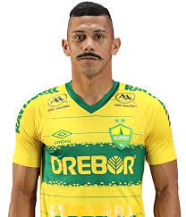

.jpg)
No começo de sua história, o Cuiabá Esporte Clube era um centro de treinamentos com enfoque nas categorias de base chamado "Escolinha do Gaúcho", uma referência ao ex-jogador e fundador Luís Carlos Tóffoli, o Gaúcho. Até o fim de 2002, o time competiu apenas em campeonatos amadores de Mato Grosso. No ano seguinte, em 2003, houve a alteração do nome e desde então o Cuiabá Esporte Clube tornou-se uma equipe profissional, fazendo a sua estreia no Campeonato Mato-Grossense daquele ano. Nos primeiros anos competindo na elite estadual, o Cuiabá foi bicampeão mato-grossense, em 2003 e 2004.[9] Já a nível nacional, estreou na Série C do Campeonato Brasileiro com vitória por 4x3 diante do Jaciara-MT e liderou o Grupo 13 que contava também com o Chapadão-MS e correspondia a Primeira fase da competição. Pela segunda fase, diante do Palmas-TO, após dois jogo terminados em 1x3 a eliminação veio nos pênaltis com o placar de 4x2 para os visitantes.[10] Em 2004 a história se repetiu, com a classificação na fase de grupos e a eliminação na segunda fase, desta vez diante do Gama-DF.[11] Pela Copa do Brasil estreou em 2004 diante do Goiás. Entre os anos de 2007 e 2008 o time passou por um período de licenciamento, sendo o fator financeiro uma das principais razões para isso acontecer.[12] Nesse mesmo período a sociedade entre Gaúcho e os irmãos Nepomuceno, os outros dois sócios do Cuiabá Esporte Clube, foi desfeita. 2009-2013 A retomada, as conquistas e os acessos No ano de 2009, o Cuiabá retomou as suas atividades depois de ter sido adquirido pelo Grupo Dresch, proprietário da Drebor Borrachas Ltda, principal patrocinadora do time desde a sua criação.[13] Ainda em 2009, disputou a Copa Mato Grosso e a segunda divisão do Campeonato Mato-grossense, sendo vice-campeão, garantindo assim o retorno da equipe a divisão de elite do campeonato estadual. No ano seguinte, o Cuiabá conquistou o primeiro título desde o seu licenciamento, a Copa Mato Grosso, diante do Operário Várzea-Grandense. Em 2011, o Cuiabá voltou a ser campeão estadual após sete anos. Além disso, fez a sua única participação na Série D do Campeonato Brasileiro, sendo promovido, após conquistar o terceiro lugar na classificação geral da competição.[14] A terceira participação do time na Série C foi em 2012, e, graças a uma confronto direto contra o Salgueiro na última rodada, o time evitou o rebaixamento.[15] No início da temporada de 2013, o Cuiabá conquistou mais um campeonato estadual, diante do Mixto.[16] Já no Campeonato Brasileiro, assim como no ano anterior, a permanência do Cuiabá na Série C também foi definida na última rodada, graças a uma combinação de resultados. 2014-2017 Arena Pantanal, conquista da Copa Verde e a estreia na Copa Sul-Americana Na temporada seguinte, em 2014, o Cuiabá conquistou seu quinto título no campeonato estadual, sendo esse o último conquistado no Estádio Eurico Gaspar Dutra, também conhecido como Dutrinha. Isso por conta da inauguração da Arena Pantanal, uma das sedes da Copa do Mundo de 2014,[17] que tornou-se o novo estádio para a grande maioria dos times das cidades de Cuiabá e Várzea Grande desde então. O Dourado fez seu jogo de estréia na Arena Pantanal diante do Internacional, pela segunda fase da Copa do Brasil de 2014.
No ano de 2015, o Cuiabá foi campeão pela terceira vez consecutiva do Campeonato Mato-Grossense, somando um total de seis títulos.[18] Essa temporada também é relevante na história do clube graças a conquista do seu primeiro título regional, a Copa Verde de Futebol.[19] Na ocasião, Cuiabá e Remo protagonizaram uma das finais mais surpreendentes do futebol brasileiro, jogo que ficou conhecido como "O Milagre do Pantanal" e "Cuiabaço".[20] Consequentemente, o time garantiu uma vaga na Copa Sul-Americana de 2016, a primeira competição internacional do Dourado.[21] Em 2016, além de disputar a terceira divisão do Campeonato Brasileiro, o Cuiabá venceu a Copa FMF, tornando-se bicampeão da competição.[22] Esse ano também foi marcado pela estreia do time em competições internacionais, sendo a primeira equipe de futebol de Mato Grosso a realizar o feito. Isso porque, graças a conquista da Copa Verde de 2015, o Cuiabá participou da Copa Sul-Americana, jogando a segunda fase contra a Chapecoense, vencendo na Arena Pantanal e sendo derrotado, e também eliminado, pelo time catarinense no jogo de volta, em Chapecó. No ano seguinte, o Cuiabá conquistou seu sétimo título do Campeonato Mato-Grossense e atingiu a marca de terceiro maior campeão estadual, desde a criação da competição, em 1943.[23] 2018-2020 Um novo acesso, o enea mato-grossense, Bicampeonato da Copa Verde e o Acesso à Série A Na temporada subsequente, em 2018, o Cuiabá conquistou o oitavo título estadual, de maneira invicta.[24] Já na segunda metade do ano, na disputa do Campeonato Brasileiro, a equipe fez a sua melhor campanha na Série C, inclusive, possuindo o melhor ataque da competição.[25] Com isso, classificou-se entre os quatro primeiros do Grupo B, e chegou as finais da competição, conquistando o vice-campeonato e, consequentemente o acesso à Série B do Campeonato Brasileiro.[26] No primeiro semestre de 2019, o Cuiabá venceu o Campeonato Mato-grossense pela nona vez, novamente de maneira invicta. Com esse título, o time tornou-se o maior campeão de Mato Grosso na última década, com um total de nove títulos oficiais, entre estaduais e regionais.[27] Em abril do mesmo ano, fez sua estreia na Série B do Campeonato Brasileiro. No fim do segundo semestre o time foi campeão da Copa Verde, pela segunda vez e graças à conquista do título regional, o time classificou-se para as oitavas de final da Copa do Brasil de Futebol de 2020.[28][29] Pelo Campeonato Brasileiro, o Cuiabá fez uma campanha acima da média, terminando a competição na oitava colocação. Em 2020, o Cuiabá foi eliminado nas quartas de finais do Campeonato Mato-grossense para o Luverdense. Alcançou a sua melhor campanha na Copa do Brasil, chegando até as quartas de finais, sendo eliminado pelo Grêmio.[30] Na Série B do Campeonato Brasileiro, chegou ao 4º lugar com 61 pontos, garantindo o acesso inédito à Série A de 2021, e encerrando um jejum de 35 anos de Mato Grosso não ter um time na elite do futebol brasileiro 2021 Decacampeão mato-grossense, estreia na Série A e vaga na Copa Sul-Americana Visando a inédita disputa da primeira divisão do Campeonato Brasileiro de Futebol de 2021, o Dourado buscou reforços importantes, entre eles o goleiro Walter, hoje ídolo da torcida, além de nomes conhecidos do futebol brasileiro como os zagueiros Paulão e Marllon e o atacante Jonathan Cafu.[31] Nas competições, o Cuiabá conquistou de forma invicta o Campeonato Mato-Grossense de Futebol de 2021 vencendo o time do Nova Mutum Esporte Clube que havia sido campeão em 2020 ressalta-se a impressionante marca de saldo de gols da equipe: 31-6,[32] na Copa Verde de 2021 o clube amargou uma eliminação nas oitavas de finais para o time do Vila Nova e na Copa do Brasil não conseguiu passar para a terceira fase da competição, caindo para a equipe do 4 de Julho Esporte Clube. Com todas as atenções voltadas para o campeonato nacional mas com pouca constância, a equipe do Cuiabá terminaria o Brasileirão na 15ª posição, o que possibilitou que a equipe se classificasse para a disputa da Copa Sul-Americana de 2022, fazendo assim sua segunda participação na história da competição.
